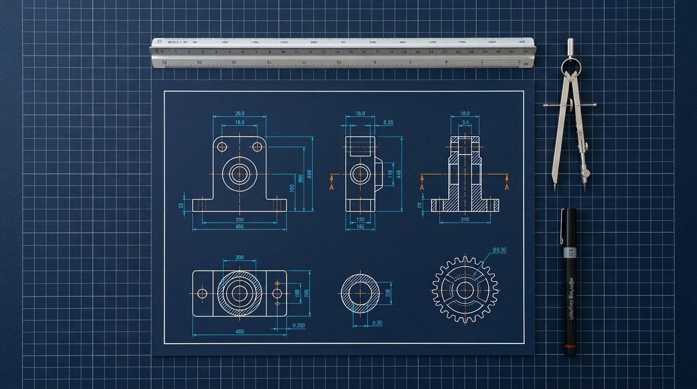

El lenguaje universal de la ingeniería y la arquitectura.
El dibujo técnico transforma conceptos tridimensionales en documentos gráficos exactos, normados y reproducibles. Explora cada disciplina en su propia página dedicada: fundamentos ISO/DIN, calculadora de escalas, galería de láminas, historia y aplicaciones industriales.
- PROYECCIÓN
- ISO-E (1.er Diedro)
- UNIDADES
- Milímetros (mm)
- MÓDULOS
- 06 Páginas Dedicadas

Explora cada módulo del Atlas
Cada opción del menú y cada segmento técnico cuenta con su propia página completa de referencia, herramientas interactivas y material visual dedicado.
Pilares Fundamentales
Normalización ISO/DIN, tabla completa del alfabeto de líneas, serie de formatos A0–A4 y comparativa entre Sistema Europeo y Americano.
ABRIR PÁGINA PILARES →Calculadora de Escalas
Conversor bidireccional (Real ↔ Plano) para escalas Natural, Reducción y Ampliación, verificador de formato A4/A3 y tabla normativa.
ABRIR CALCULADORA →Galería de Láminas y Planos
Catálogo filtrable con láminas en alta resolución e inspección dual (Imagen HD / Plano SVG) en lightbox interactivo con cajetín técnico.
ABRIR GALERÍA →Historia del Arte y del Dibujo
Línea de tiempo interactiva e ilustrada desde la estatua de Gudea y el Renacimiento hasta Gaspard Monge, normas ISO/DIN y BIM.
ABRIR HISTORIA →Aplicaciones Industriales
Análisis visual y técnico de Ingeniería Mecánica, Arquitectura, Electrónica/Mecatrónica y Diseño de Producto con matriz comparativa.
ABRIR APLICACIONES →Sistema Unificado
Todas las páginas comparten la misma normativa gráfica: cotas en mm, trazos normalizados y acceso directo al cajetín de consulta.
VER PLANOS DESTACADOS →